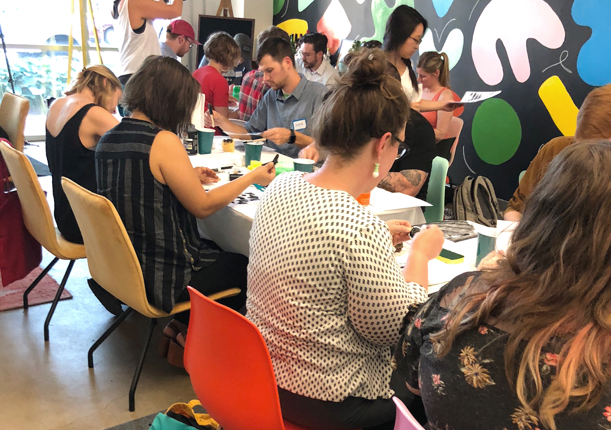

It is really hard finding good educational content that is designed and executed well. That is the whole reason why we started Artists for Education! So it should come to no surprise that one of our AFE artists, Josh Lewis, created this incredible, beautiful interactive website teaching us all about our solar system! It is really hard finding good educational content that is designed and executed well. That is the whole reason why we started Artists for Education! So it should come to no surprise that one of our AFE artists, Josh Lewis, created this incredible, beautiful interactive website teaching us all about our solar system!
| Planet Name | Size | Poster |
|---|---|---|
| Mercury | 23232 | |
| Mercury | 23232 | |
| Mercury | 23232 |
Brave the Woods is not simply a name, it is a call to action to be adventurous and curious. We believe in exploration and collaboration and allow that to permeate all aspects of our studio. These core values of adventure, exploration, and collaboration have led us to be a studio that does more than just create pretty pictures (even though we are excellent at it). We are dreamers who don’t just dream; we act. This ability to act and take a leap out of our comfort zone, as scary as it may be at times, is what sets us apart as creative problem solvers.
WORKSHOPS |
 |